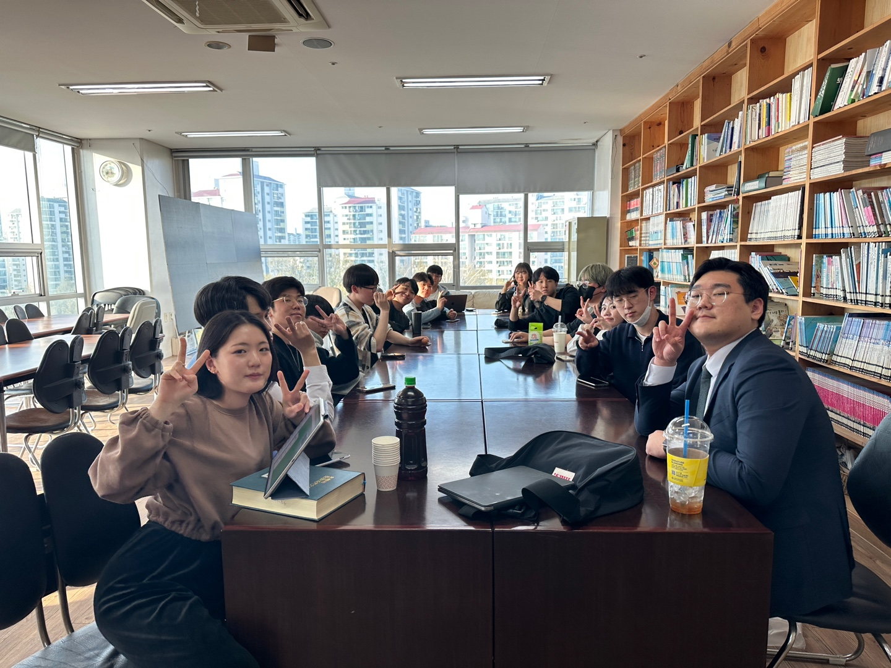
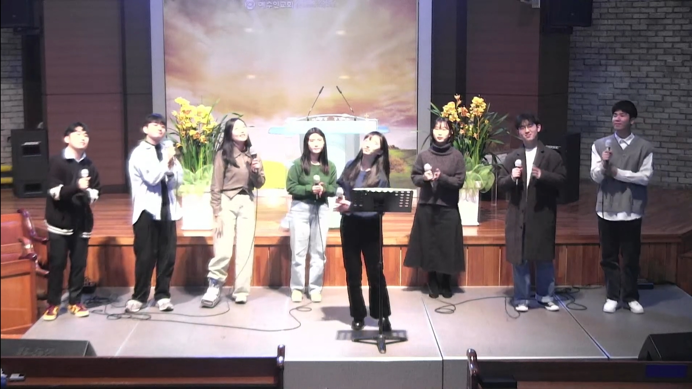

선교다짐
"선교를 통해 하나님의 섭리와 일하심을 경험하겠습니다."
기도제목
- 살아계신 하나님을 선교기간 동안 경험하게 하여주시옵소서
- 익숙하게 누리며 살아온 것들이 얼마나 감사한 것인지 깨닫게하여 주시옵소서
- 선교팀 모두가 하나님의 선교에 동참하여 아름답게 쓰임받는 도구되게 하여주시옵소서
선교 게시판
(4/16~ )
선교 관련 정보 게시
(계속해서 업데이트 됩니다)
선교 바자회
(5/21)
선교 부스, 간단한 먹거리 부스, 선교 굿즈 등 판매할 예정
선교 주일
(5/21 &28 중에)
선교 예배 준비
현지교회
협력사역
청소년&청년 사역
전도 사역
"선교를 통해 하나님의 섭리와 일하심을 경험하겠습니다."
"하나님의 사랑과 복음을 기쁨으로 전하고 내 마음이 앞서지 않는 하나님의 선교를 하겠습니다."
"모든 계획이 주님의 뜻대로 이루어지기를 소망하며 기도로 나아가겠습니다."
"하나님께 모든 것을 맡기고 최선을 다하겠습니다."
"사랑 전하고 오겠습니다."
"이후 선교에도 선교자로서 더욱 큰 역할을 할 수 있도록 많은 것을 배워가겠습니다."
"다시금 먼저 받은 사랑을 기억하며 주님께서 원하시는 발걸음으로 동행하며 나아가기 위한 시간들이 되기를 바랍니다."
"제가 받은 사랑을, 하나님의 사랑을 전하고 오겠습니다."
"이번 선교를 통해 주님과 교제하는 시간 될 수 있도록하고, 선교지에서 주님의 향기를 뿜어낼 수 있기를 바랍니다."
"주님의 일하심을 더욱 마주하고 싶습니다."
"온전히 주님께 집중하며 모든 과정 속에서 주님과 동행하도록 하겠습니다."
"선교를 나의 힘이 아닌 주님의 힘으로 사역할 수 있기를 바랍니다"
"있는 상황에서 항상 주를 떠올리려고 노력하겠습니다."
"첫 선교인만큼 하나님의 복음을 있는 그대로 전달할 수 있도록 집중하는 선교를 하겠습니다."
"하나님의 말씀을 널리 알릴수있는 선교를 하겠습니다."